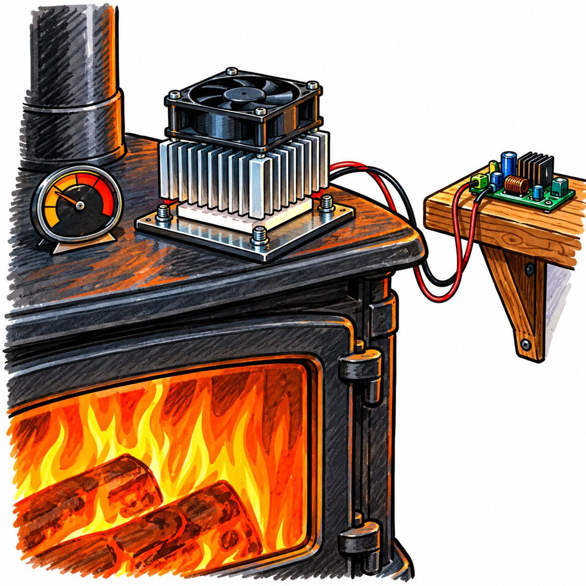
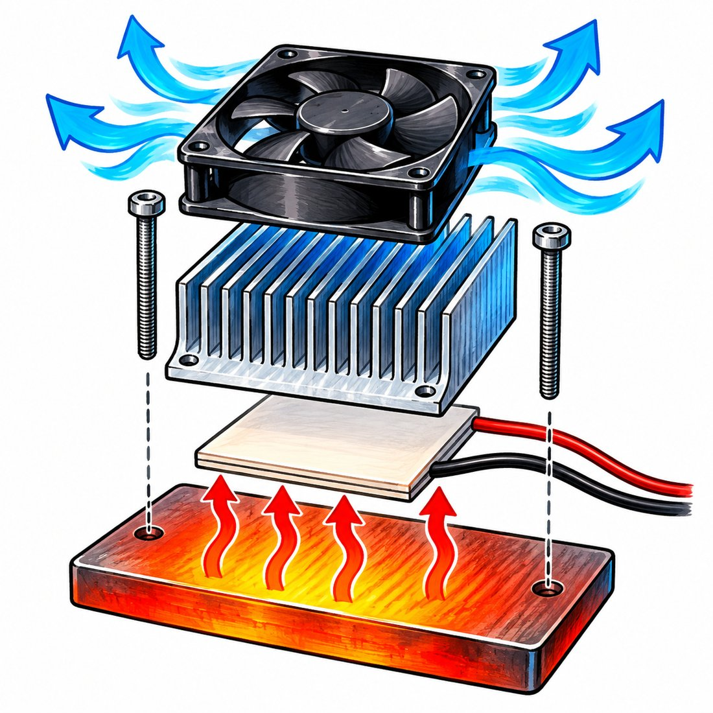
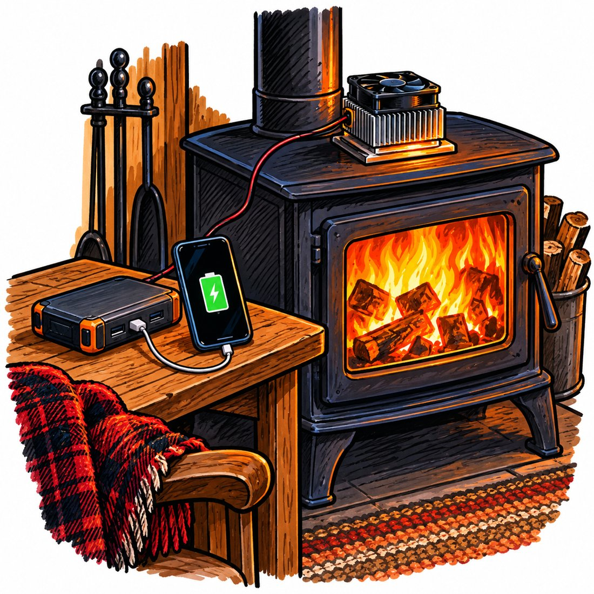

It is a flat ceramic square about 2 inches across with two wires. Heat the bottom, keep the top cool, and it makes electricity. The chip does not make power from heat. It makes power from a difference in heat.
Inside is a grid of tiny bismuth telluride pillars. Heat one end and the charges pile up at the cold end, leaving a voltage. The build chip has 126 pairs of pillars in a 56 millimeter square.

On a bright day the solar kit wins easily. Under heavy cloud, panels make 10 to 25 percent of their rating. Under snow, close to nothing. At night, nothing. A wood stove in a winter outage runs hottest at night, exactly when a panel is useless.

Put a second chip beside the first and wire them in series. The voltage adds up, and a regulator that takes 20 volts in still handles it. Two chips is a sensible ceiling for a fan cooled build.
The chip is rated for a 300 Celsius hot face, which is 572 Fahrenheit. Keep the stove thermometer beside it under about 550 Fahrenheit, and set the chip toward a cooler edge, not the hottest spot. Watch out for cheap 40 millimeter chips, often rated only to 150 Celsius, which is 302 Fahrenheit. A wood stove kills those fast. Most stove top thermometers mark a best burn zone of about 400 to 600 Fahrenheit, which runs past the chip's limit. Check the maximum hot side temperature before you buy anything.
Runs: a phone, a small plug in lamp at 1 to 3 watts, many weather radios, a headlamp, a small fan, most walkie talkies. A trickle that never stops while the fire burns.
Will not: anything that makes heat or cold. A space heater, a fridge, a microwave, or a hair dryer each want hundreds or thousands of watts.

In September 2024, Hurricane Helene hit western North Carolina. Two days after landfall, the Federal Communications Commission reported 74 percent of cell sites in its North Carolina reporting area out of service.
Two weeks after landfall, Duke Energy still had more than 80,000 customers in the Carolinas without power. Every time a tower came back, it only helped the people whose phones still had a charge.
Federal guidance: keep your phone charged, and text instead of calling. A text can squeeze through a jammed network when a call will not. A 20 dollar power bank is great on night one and empty on day nine. The chip refills it every evening the fire is lit.